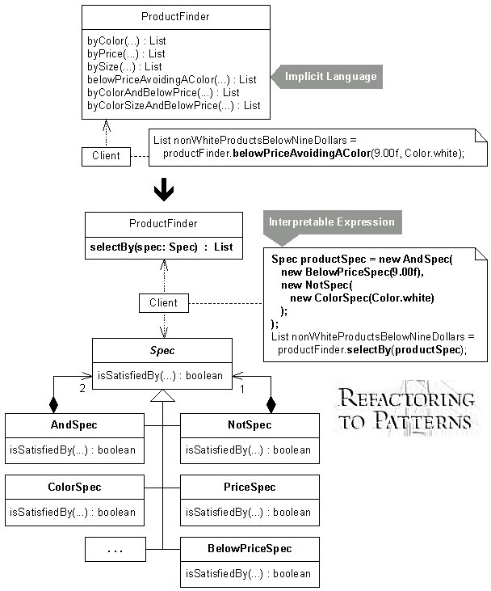

class: center, middle # Refactoring To Patterns --- ## Catalog - [Compose Method](#3) - [Encapsulate Classes with Factory](#4) - [Encapsulate Composite with Builder](#5) - [Extract Adapter](#6) - [Extract Composite](#7) - [Form Template Method](#8) - [Introduce Null Object](#9) - [Move Accumulation to Collecting Parameter](#10) - [Move Accumulation to Visitor](#11) - [Replace Conditional Dispatcher with Command](#12) - [Replace Conditional Logic with Strategy](#13) - [Replace Constructors with Creation Methods](#14) - [Replace Implicit Language with Interpreter](#15) - [Replace Implicit Tree with Composite](#16) - [Replace State-Altering Conditionals with State](#17) - [Replace Type Code with Class](#18) --- ## Compose Method ***You can't rapidly understand a method's logic.*** <br/>Transform the logic into a small number of intention-revealing steps at the same level of detail. <br/> --- ## Encapsulate Classes with Factory ***Clients directly instantiate classes that reside in one package and implement a common interface.*** <br/>Make the class constructors non-public and let clients create instances of them using a Factory. <br/> --- ## Encapsulate Composite with Builder ***Building a Composite is repetitive, complicated or error-prone.*** <br/>Simplify the build by letting a Builder handle the details. <br/> --- ## Extract Adapter ***One class adapts multiple versions of a component, library, API or other entity.*** <br/>Extract an Adapter for a single version of the component, library, API or other entity. <br/> --- ## Extract Composite ***Subclasses in a hierarchy implement the same Composite.*** <br/>Extract a superclass that implements the Composite. <br/> --- ## Form Template Method ***Two methods in subclasses perform similar steps in the same order, yet the steps are different.*** <br/>Generalize the methods by extracting their steps into methods with identical signatures, then pull up the generalized methods to form a Template Method. <br/> --- ## Introduce Null Object *** Logic for dealing with a null field or variable is duplicated throughout your code.*** <br/>Replace the null logic with a Null Object: an object that provides the appropriate null behavior. <br/> --- ## Move Accumulation to Collecting Parameter ***You have a single bulky method that accumulates information to a local variable.*** <br/>Accumulate results to a Collecting Parameter that gets passed to extracted methods. <br/> --- ## Move Accumulation to Visitor ***A method accumulates information from heterogeneous classes.*** <br/>Move the accumulation task to a Visitor that can visit each class to accumulate the information. <br/> --- ## Replace Conditional Dispatcher with Command ***Conditional logic is used to dispatch requests and execute actions.*** <br/>Create a Command for each action. Store the Commands in a collection and replace the conditional logic with code to fetch and execute Commands. <br/> --- ## Replace Conditional Logic with Strategy ***Conditional logic in a method controls which of several variants of a calculation are executed.*** <br/>Create a Strategy for each variant and make the method delegate the calculation to a Strategy instance. <br/> --- ## Replace Constructors with Creation Methods ***Constructors on a class make it hard to decide which constructor to call during development.*** <br/>Replace the constructors with intention-revealing Creation Methods that return object instances. <br/><img src="./images/multipleconstructorwithcreator.jpg" alt="replace constructors with creation methods"/> --- ## Replace Implicit Language with Interpreter ***Numerous methods on a class combine elements of an implicit language.*** <br/>Define classes for elements of the implicit language so that instances may be combined to form interpretable expressions. <br/> --- ## Replace Implicit Tree with Composite ***You implicitly form a tree structure, using a primitive representation, such as a String.*** <br/>Replace your primitive representation with a Composite. <br/><img src="./images/implicitTreeWithComposite.jpg" src="replace implicit tree with composite" height="440"/> --- ## Replace State-Altering Conditionals with State ***The conditional expressions that control an object's state transitions are complex.*** <br/>Replace the conditionals with State classes that handle specific states and transitions between them. <br/> --- ## Replace Type Code with Class ***A field's type (e.g. a String or int) fails to protect it from unsafe assignments and invalid equality comparisons.*** <br/>Constrain the assignments and equality comparisons by making the type of the field a class. <br/> --- ## Book  <img src="./images/refact2.jpg" alt="[refactoring of patterns 2" height="345"/> https://www.industriallogic.com/xp/refactoring https://www.refactoring.com/catalog/index.html --- ## About me Javaer, Pythoner, Rustacean, JS & ReactJS, FP Fans - [blog](https://yongchao.li) - [github](https://github.com/linychuo) - [bitbucket](https://bitbucket.org/linychuo/)